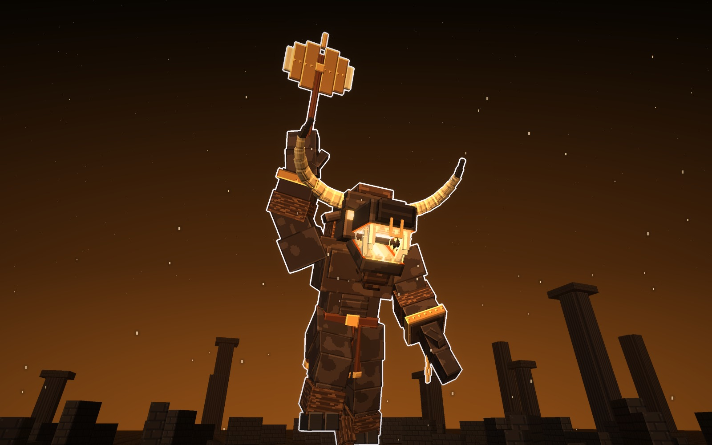
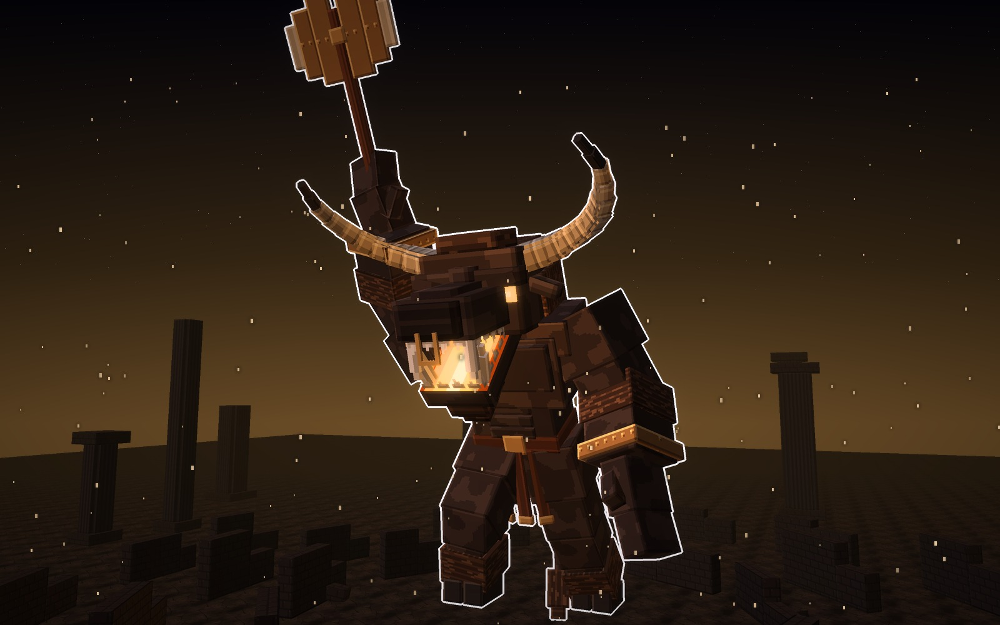
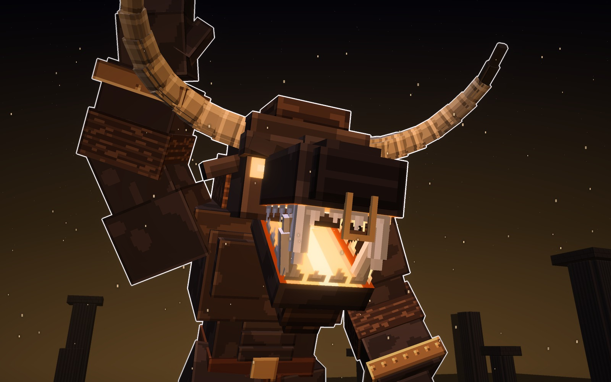
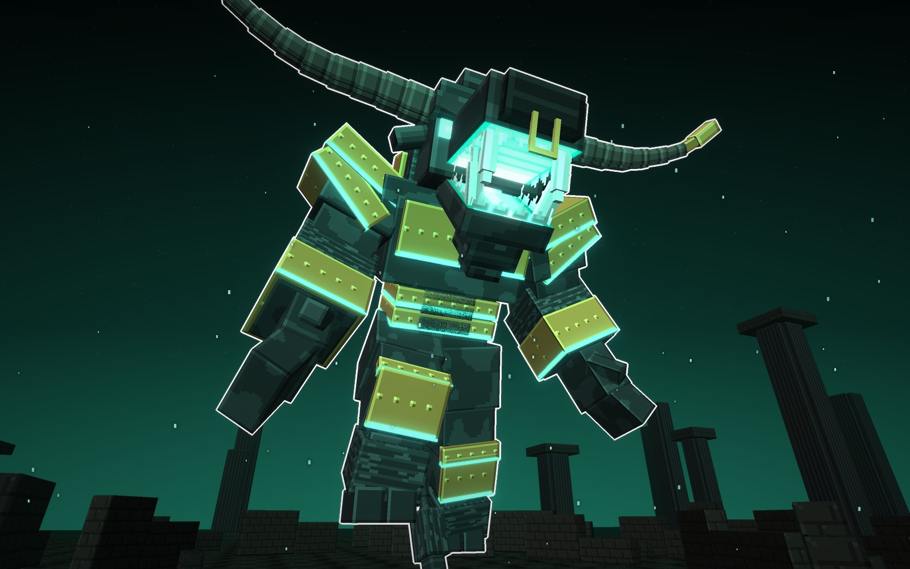
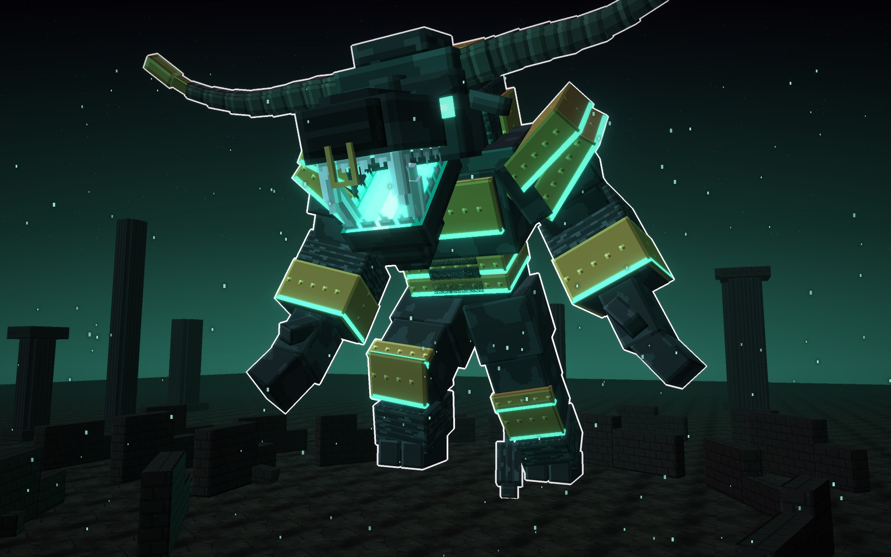
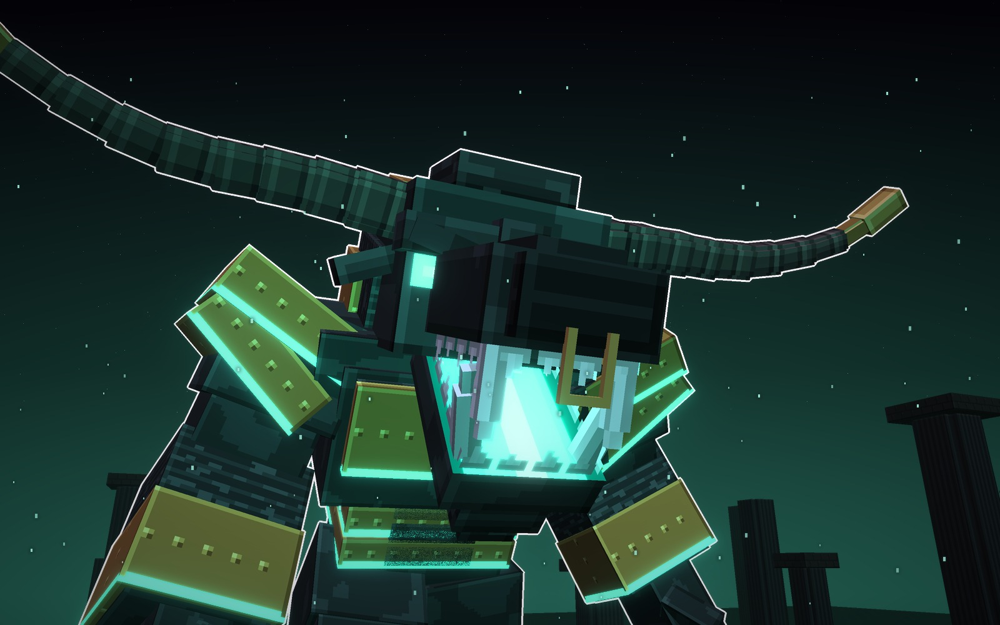
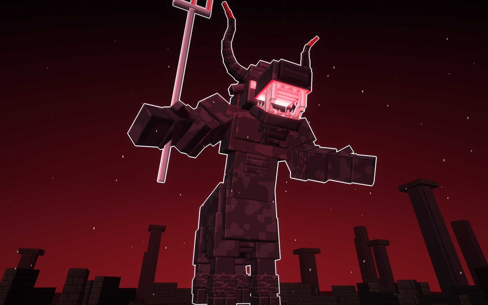
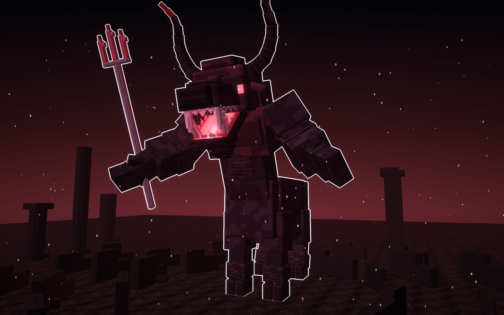
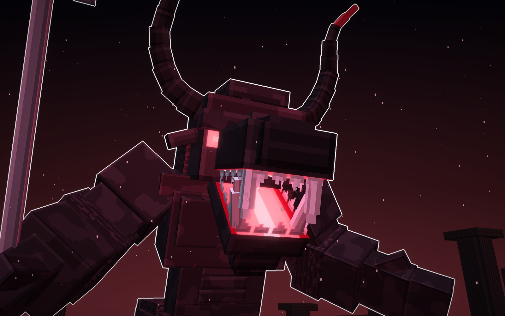
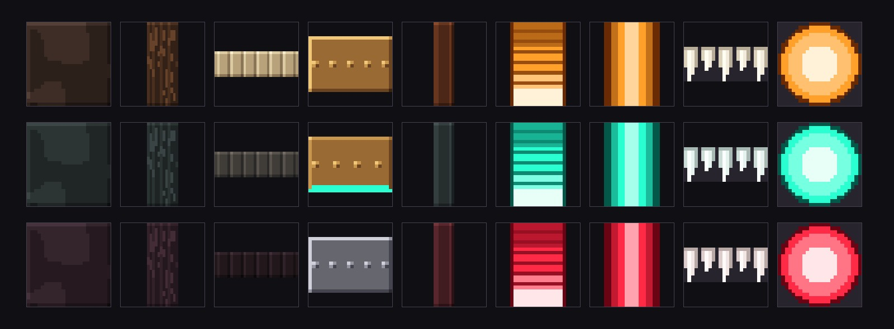

Qué cambia en esta versión
Dijiste que solo el Calcotauro parecía un minotauro: Asterión y el Bucentauro eran medio delgados. Ahora las tres formas
tienen el cuerpo del Calcotauro:
- Van encorvadas: la cabeza sale por delante de los hombros, no por encima.
- La giba de pelo es alta y sube detrás de la nuca, como la de un toro.
- El pecho y los hombros son el doble de anchos, con los pectorales y el vientre marcados.
- Los brazos son más gruesos, con el deltoide de bloque y el antebrazo peludo.
- Las piernas son cortas y gruesas.
Las tres siguen cambiando de silueta por el arma, los cuernos y la postura, y el Bucentauro sigue sobre cuatro patas.
Está hecho con la guía de las fichas de jefes:
- La cabeza manda: es grande, mira a cámara y tiene las fauces abiertas.
- La boca arde por dentro con un solo neón.
- Los cuernos enmarcan la cabeza.
- El cuerpo es oscuro y macizo, todo de cajas y con texturas limpias.
- Tiene tres formas que se distinguen solo por la silueta.
Del estilo de la Gorgona toma el mito y el monstruo bien a la vista: es una bestia que impone, sin fanservice.
Las fotos van sin letras y con el borde blanco, y cada forma tiene su cartel.
Cómo es el Minotauro
La cabeza
- El cráneo es ancho. Bajo el ceño de hueso, en ángulo, lleva los ojos encendidos.
- El morro es largo y lleva el aro de bronce colgando del tabique.
- Las fauces, abiertas:
- el paladar arde en escalones de luz;
- los dientes van dibujados en hojas, no hechos de cubos;
- arriba lleva dos colmillos, y abajo, dos defensas que suben;
- tiene la barba y, al fondo de la garganta, el núcleo.
- Los cuernos tienen anillos y cambian de forma en cada una.
El cuerpo
- El torso va encorvado. El pecho es ancho, con los pectorales y el vientre marcados. Detrás de la nuca sube la giba de pelo, alta como la de un toro.
- Los brazos son enormes, con el deltoide de bloque, el pelo en el antebrazo y los puños de bloque.
- Las piernas son cortas y gruesas. El pelo largo les cae sobre las pezuñas hendidas.
- La cola acaba en un penacho.
- Codos y rodillas doblan por el canto, como el cuerpo de la Gorgona.
Las tres formas
Las tres comparten la cabeza y el cuerpo. Cambian la silueta, que se distingue de lejos: con el hacha en alto,
acorazado para embestir o sobre cuatro patas.
A · Asterión · ámbar
Asterión, el del Laberinto
El minotauro del mito, el que esperaba en el centro del laberinto de Creta. Está encorvado, con la giba alta y el hacha de doble
filo en alto y, en la otra muñeca, el grillete con la cadena rota. Lleva los cuernos de marfil hacia delante, el faldón
de tiras de cuero con las puntas de bronce y el cinturón con su hebilla. La boca arde en ámbar, como las antorchas del
laberinto.



Su forma
- Silueta
- encorvado, con el hacha en alto
- Arma
- el hacha de doble filo (la lábrys)
- Cuernos
- hacia delante, de marfil
- Luz
- ámbar
Señas
- La del mito: se lee como el Minotauro de un vistazo.
- La más alta: 46 bloques hasta el filo del hacha.
piel
cuerno
bronce
luz
B · el Calcotauro · turquesa
El Calcotauro
El toro de bronce que echa fuego, como los que domó Jasón. Está encorvado para embestir, con la cabeza
baja y los cuernos muy abiertos, con la punta de bronce. Lleva placas de bronce en la giba, el pecho, el vientre, los
hombros, los antebrazos y las rodillas, y las juntas de las placas brillan en turquesa, como la pátina del bronce
viejo.



Su forma
- Silueta
- encorvado, a punto de embestir
- Armadura
- placas de bronce con las juntas encendidas
- Cuernos
- muy abiertos, con casquillo de bronce
- Luz
- turquesa
Señas
- La más pesada: carga de frente.
- La más ancha: 35 bloques de cuerno a cuerno.
piel
bronce
cuerno
luz
C · el Bucentauro · carmesí
El Bucentauro
Medio toro: el torso del minotauro, encorvado y con su giba, sobre un cuerpo de toro de cuatro patas, como en los vasos griegos.
Lleva el tridente del toro de Creta, el que salió del mar de Poseidón, y los cuernos en lira, negros con la punta
carmesí.



Su forma
- Silueta
- cuatro patas y el torso encorvado
- Arma
- el tridente de bronce
- Cuernos
- en lira, negros con la punta carmesí
- Luz
- carmesí
Señas
- La más rápida: va sobre cuatro patas.
- La más larga: 34 bloques de largo y 40 de alto con el tridente.
piel
cuerno
punta
luz
Las tres, a escala
Las tres juntas, con la misma luz y un jugador delante (1,8 bloques). Encorvado, el Calcotauro llega a 29 bloques
en las puntas de los cuernos: el jugador le llega por la pezuña.
Asterión46 de alto con el hacha · 25 de ancho
el Calcotauro29 de alto · 35 de cuerno a cuerno
el Bucentauro40 de alto con el tridente · 34 de largo
Los materiales
Las texturas de cada forma a píxel grande, sin letras. Hay una fila por forma y, de izquierda a derecha, van:
- la piel, con manchas grandes;
- el pelo;
- el cuerno, con anillos;
- el metal (en el Calcotauro, las placas encendidas);
- el cuero;
- el paladar;
- el suelo de la boca;
- los dientes, dibujados en hoja;
- el núcleo de la garganta.

Veredicto de Juan
Lo dio por bueno el 14-10-2026, cuando las tres formas tuvieron el cuerpo macizo y encorvado del Calcotauro: «ahora sí guarda al minotauro y sus 3 versiones en bosses».
Bocetos: materiales/generadores/minotauro_modelo.py y minotauro_escenas.py (y jefa_modelo.py, del que toma los tubos
de bloques y las manos).